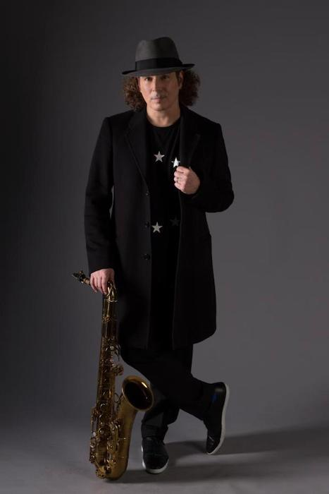

My whole career from the early 70s on has been mind-blowing. I didn't imagine in my life that I would ever be considered a guitar player first of all because I started off as a singer.

Boney James is a smooth jazz saxophonist responsible for merging saxophone-based soloing with R&B music.
From Wikipedia:
In the early 1990s while on tour with Bobby Caldwell's band James met engineer and producer Paul Brown, beginning a 10-year period of collaboration. In 1992 Boney released his debut album as a leader, Trust, on the independent record label Spindletop Records. Following the record's success, James was signed by the Warner Brothers label in 1994. He released the RIAA Certified Gold Records, Seduction, Sweet Thing and Body Language on Warner Brothers.
In 2000 he collaborated with trumpeter Rick Braun on an album called Shake it Up. Their duets include the now classic updated version of Hugh Masakela's "Grazin' in the Grass". Other artists who have made guest appearances on Boney's records include Raheem DeVaughn, Faith Evans, George Benson, George Duke, Dwele, Al Jarreau, Philip Bailey, Anthony Hamilton, Jaheim, Eric Benét, Dave Hollister, Stokley Williams, Avery*Sunshine, Kenny Lattimore and Angie Stone.